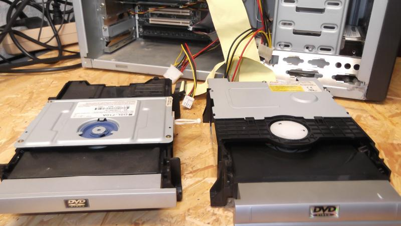
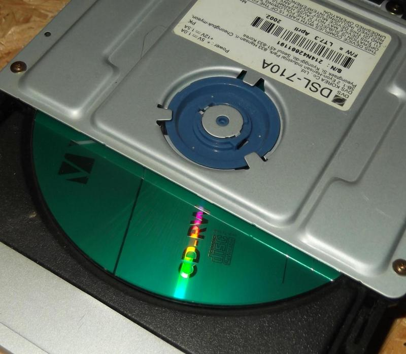
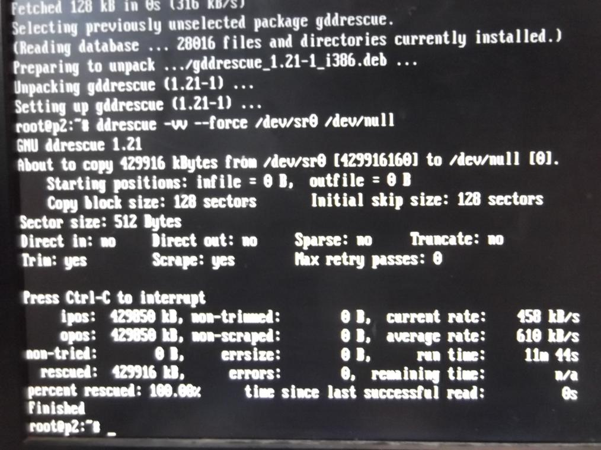

Kurzerhand beide ausgebaut und in einen Pentium 2 gesteckt. Eines war wirklich defekt, das andere ging.
Da die Laufwerke keine Hardware-Buttons haben, benutze ich einfach "eject /dev/cdrom".
Mit "ddrescue -vv --force /dev/cdrom /dev/null" lese ich die CD und lege sie im Nirvana ab. Geht ja auch nur um die Geschwindigkeit.
Sehr schnell sind die Laufwerke anscheinend nicht, im Schnitt hatte ich beim Lesen einer CDRW 610 Kilobyte pro Sekunde.
| Beide Laufwerke | Label LW #1 | Label LW #2 |
| Drehen sieht man nicht auf dem Foto... | ddrescue screenrape |
Kurz nach den Fotos landeten die dann noch im E-Schrott...